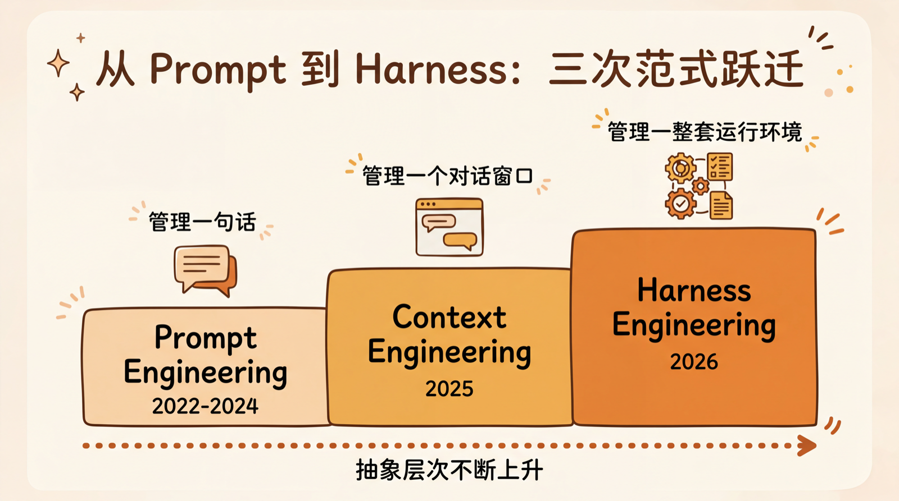
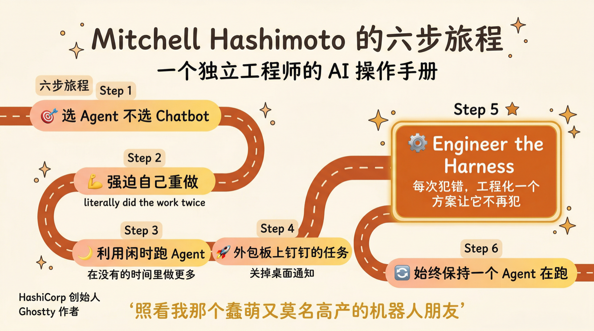
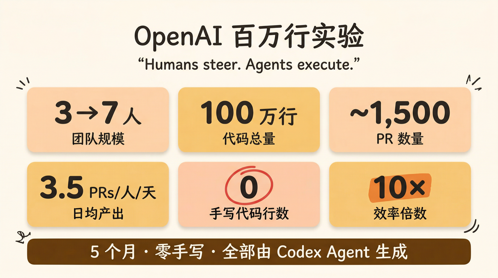
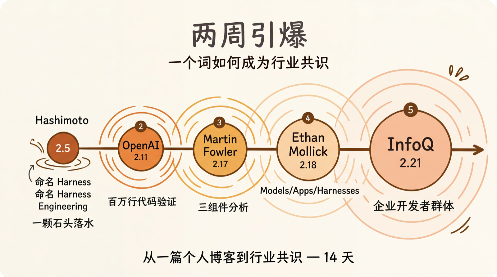
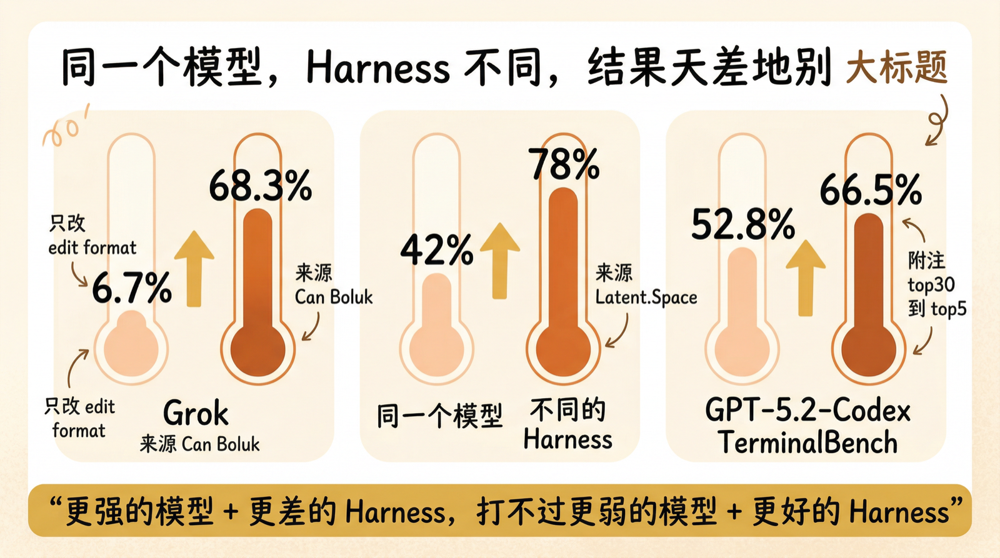
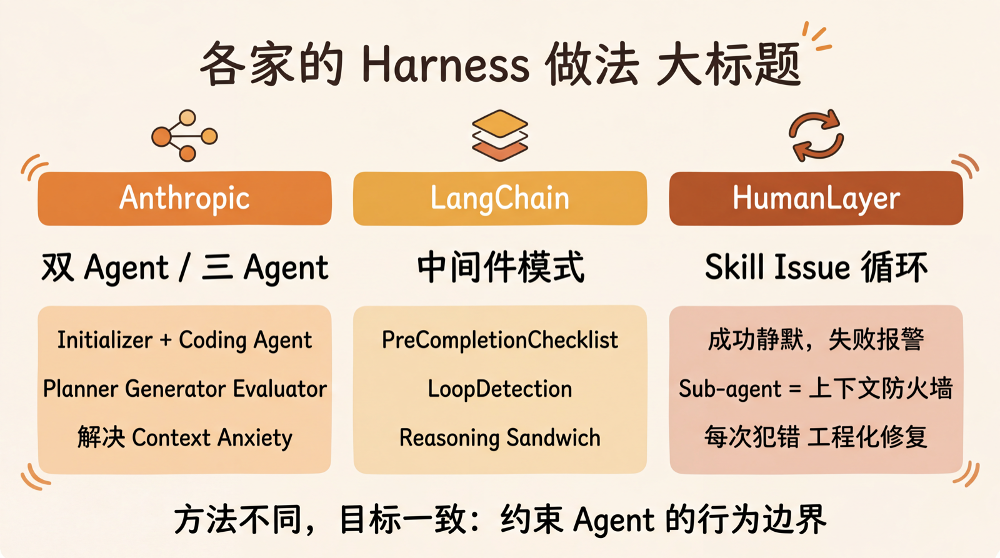
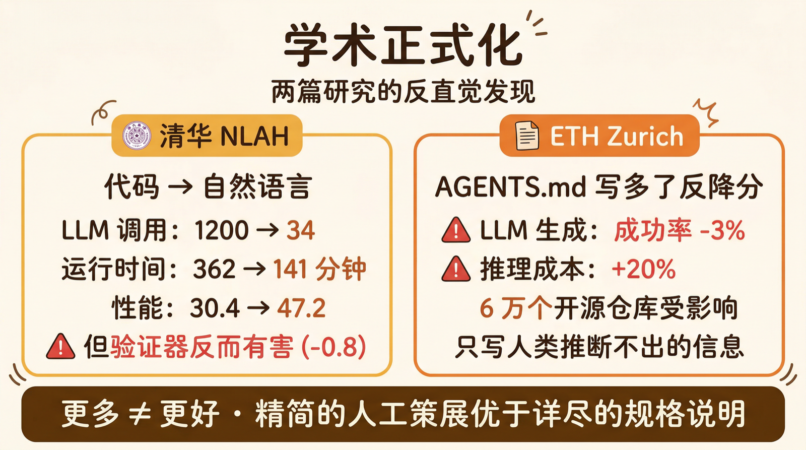
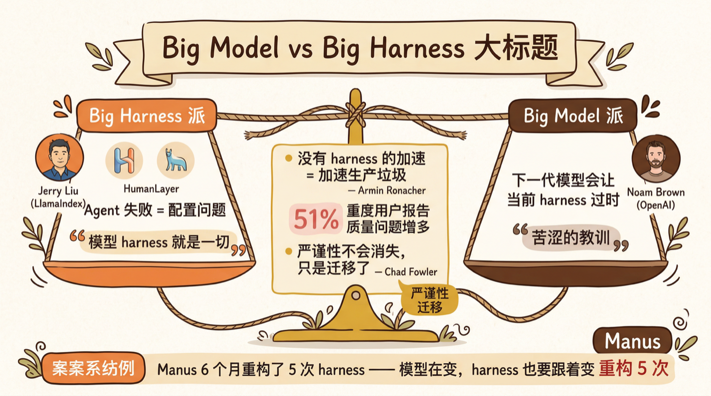
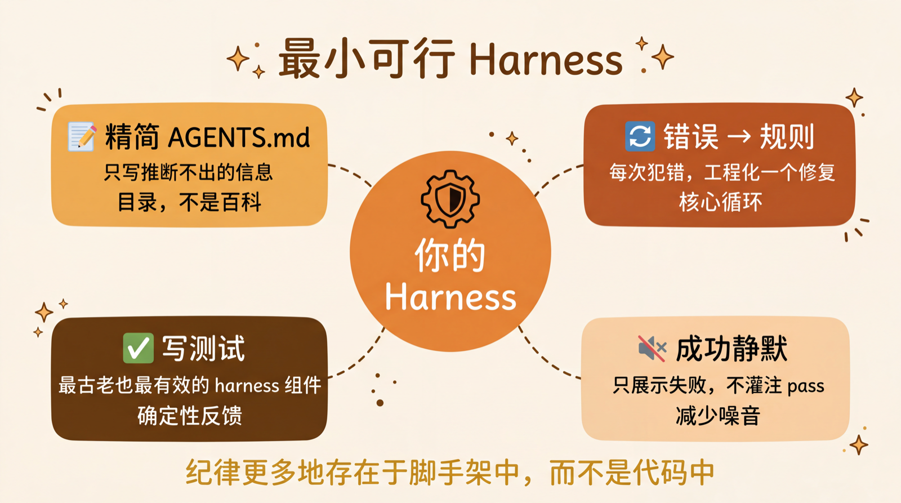

Harness Engineering：两周内从博客到行业共识的新工程学科
引言
2026 年 2 月 5 日，Mitchell Hashimoto（HashiCorp 创始人、Ghostty 终端作者）发了一篇博客，标题很朴素——“My AI Adoption Journey”。文中第五步，他写了这么一段话：
“I don’t know if there is a broad industry-accepted term for this yet, but I’ve grown to calling this harness engineering. It is the idea that anytime you find an agent makes a mistake, you take the time to engineer a solution such that the agent never makes that mistake again.”
两周后，OpenAI、Anthropic、Martin Fowler、Ethan Mollick、LangChain 全部跟进。一个月后，清华大学发了论文，把它正式化为学术研究方向。
一个人在博客里随手造的词，变成了 2026 年 AI 工程领域最重要的新概念。
这篇文章试图把这件事的来龙去脉讲清楚。
一、前史：从 Prompt Engineering 到 Context Engineering

在理解 Harness Engineering 之前，先回顾一下我们是怎么走到这里的。
| 阶段 | 时间 | 核心问题 | 做法 |
|---|---|---|---|
| Prompt Engineering | 2022-2024 | 怎么让模型给出更好的回答？ | 精心设计单条 prompt：few-shot、CoT、角色扮演 |
| Context Engineering | 2025 | 怎么给模型更好的上下文？ | 管理整个对话窗口：RAG、system prompt 分层、工具描述优化 |
| Harness Engineering | 2026 | 怎么让 agent 在真实环境中持续可靠地工作？ | 设计 agent 周围的整套约束系统：测试、架构、反馈回路、状态管理 |
注意这三个阶段的抽象层次在不断上升：
- Prompt Engineering 管的是一句话
- Context Engineering 管的是一个对话窗口
- Harness Engineering 管的是一整套运行环境
Karpathy 在 2026 年 2 月 4 日（比 Hashimoto 早一天）发推用了另一个词——“Agentic Engineering”：
“You are not writing the code directly 99% of the time, you are orchestrating agents who do and acting as oversight.”
功能上说的是同一件事。但最终是 Hashimoto 的 “Harness Engineering” 这个名字流传开了，大概因为 “harness”（马具/挽具）这个隐喻更精准——你不是在写代码，你在给 AI 套上缰绳和马鞍。
二、命名时刻：Hashimoto 的六步旅程

Hashimoto 的那篇文章之所以有影响力，不是因为他造了一个词，而是因为他以一个不卖 AI 产品的独立工程师的身份，写了一份极其务实的操作手册。
他自称”babysitting my kind of stupid and yet mysteriously productive robot friend”（照看我那个蠢萌又莫名高产的机器人朋友）。
他的六步旅程：
Step 1：选 Agent，不选 Chatbot。 浏览器里的 ChatGPT 是死胡同，必须用能读文件、执行命令、循环操作的 Agent 工具。
Step 2：强迫自己把手写的 commit 全部用 agent 重做一遍。 原话：”I literally did the work twice.” 目的是建立对 agent 能力边界的直觉。
Step 3：利用闲时跑 agent。 每天留 30 分钟，在下班前启动 agent 跑深度调研、PR triage、模糊探索。第二天早上拿到”热启动”的结果。核心逻辑：
“Instead of trying to do more in the time I have, try to do more in the time I don’t have.”
Step 4：把”板上钉钉”的任务外包给 agent。 每天先处理 triage 报告，把高确定性任务分配给后台 agent，自己做需要深度思考的工作。关键纪律：关掉 agent 的桌面通知——“it was my job as a human to be in control of when I interrupt the agent, not the other way around.”
Step 5：Engineer the Harness。 核心方法论。两种形式：
- 隐式约束：通过 AGENTS.md 规范 agent 行为。他贴了 Ghostty 项目的 AGENTS.md 链接，说”each line in that file is based on a bad agent behavior, and it almost completely resolved them all”
- 显式工具：写脚本让 agent 能截图、跑筛选过的测试等
Step 6：始终保持一个 agent 在跑。 目标是工作日的 10%-20% 时间有一个后台 agent 在干活。
这六步的价值在于：它不是理论框架，而是一个实际在用 Agent 做独立项目的工程师的操作日志。
三、百万行实验：OpenAI 的极端验证

如果 Hashimoto 是点燃火柴的人，OpenAI 就是往上浇了一桶汽油。
2026 年 2 月 11 日（Hashimoto 发文 6 天后），OpenAI 发布了一篇标题就叫 “Harness Engineering” 的文章，报告了一个极端实验：
| 指标 | 数据 |
|---|---|
| 团队规模 | 3 人起步，扩展到 7 人 |
| 时间跨度 | 5 个月（2025.8 首次 commit） |
| 代码量 | ~100 万行 |
| PR 数量 | ~1,500 个 |
| 每人每天 PR | 3.5 个 |
| 人工手写代码 | 零 |
| 效率对比 | 约为手写的 10 倍 |
| 单次 Codex 运行时间 | 有时超过 6 小时 |
零手写代码。 所有逻辑、测试、CI、文档、可观测性、内部工具——全部由 Codex agent 生成。
他们的核心结论：
“Humans steer. Agents execute.”
工程师的工作从写代码变成了设计环境、明确意图、构建反馈回路。当 agent 遇到困难时，解法永远不是”再试试”，而是问”缺什么能力，怎么让 agent 感知到并遵守”。
AGENTS.md 是目录，不是百科全书
OpenAI 明确拒绝了把所有信息塞进 AGENTS.md 的做法：
“Give Codex a map, not a 1,000-page manual.”
他们的 AGENTS.md 只有 ~100 行，像一个目录页，指向结构化的 docs/ 目录。里面包含：设计文档（带验证状态）、架构文档、每个域的质量评分卡、带进度日志的执行计划。
原则是渐进式披露——agent 从一个小而稳定的入口出发，按需深入。
“垃圾回收” Agent
最初团队每周五花一整天（20% 工时）清理”AI 生成的垃圾代码”——不可持续。后来他们用一组后台 Codex 任务替代：定期扫描漂移、更新质量评分、开针对性重构 PR。大部分 PR 一分钟内就能审完自动合并。
“Technical debt is like a high-interest loan: better to pay it down continuously in small installments than let it compound.”
四、两周引爆：Martin Fowler、Ethan Mollick 的放大效应

Hashimoto 2 月 5 日发文，OpenAI 2 月 11 日跟进。接下来的事情像连锁反应：
2 月 17 日，Martin Fowler 网站上 Birgitta Böckeler 发布分析文章。她把 Harness Engineering 拆成三个组成部分：Context Engineering（上下文工程）、Architectural Constraints（架构约束）、Garbage Collection（垃圾回收）。她还指出 OpenAI 文章标题里的 “Harness Engineering” 很可能就是从 Hashimoto 那借来的。
Böckeler 有一个特别有价值的观点：AI 理解代码的能力比生成代码的能力更有价值。 用 AI 来导航和理解不熟悉的代码库，往往比让它写新代码更划算。
“I still care about the code.”
她直接反驳了 “vibe coding” 的潮流——因为 AI 输出是非确定性的，使用 AI 生成的代码本质上是持续的风险评估。
2 月 18 日，Ethan Mollick（沃顿商学院教授、AI 领域最有影响力的科普作者之一）提出了 Models / Apps / Harnesses 三分框架：
“The harness takes the raw power of the horse and lets it pull a cart.”
他把使用 AI agent 的技能重新定义为更接近管理（写需求、委派任务、评估产出），而非 prompt engineering。
2 月 21 日，InfoQ 报道了 OpenAI 的文章，把概念送到了企业开发者群体面前。
从一篇个人博客到行业共识——整个过程大约两周。
五、数据说话：同一个模型，不同的 Harness

Harness Engineering 之所以能快速获得共识，因为有一个极其直观的论证：同一个模型，只改 harness，性能天差地别。
| 实验 | 模型 | 变量 | 结果 | 出处 |
|---|---|---|---|---|
| LangChain TerminalBench 2.0 | GPT-5.2-Codex（固定） | 只改 harness | 52.8% → **66.5%**（top30→top5） | LangChain Blog |
| Latent.Space 汇总 | 同一模型 | 不同 harness | 42% → 78% | Latent.Space |
| Can Boluk (@_can1357) | Grok | 只改 edit format | 6.7% → 68.3% | X/Twitter |
| LangChain 对比 | Claude Opus 4.6 vs GPT-5.2-Codex | Opus 用旧 harness | Opus 59.6% < GPT 66.5%（更好的 harness） | LangChain Blog |
最后一行特别说明问题：更强的模型 + 更差的 harness，打不过更弱的模型 + 更好的 harness。
LangChain 的总结很精确：
“The goal of a harness is to mold the inherently spiky intelligence of a model for tasks we care about.”
模型的能力是”尖刺状”的——某些方面很强，某些方面莫名其妙地弱。Harness 的作用就是把这些尖刺修剪到你需要的形状。
六、各家的做法

理论讲完了，看看实际怎么做。
Anthropic：双 Agent 和三 Agent 架构
Anthropic 发了两篇工程博客，分享了两种不同的架构设计。
双 Agent 架构（用于长时间运行的编码任务）：
- Initializer Agent：首次运行，把用户的高层描述展开成 200+ 结构化 feature（用 JSON 而非 Markdown——“模型不太会乱改 JSON”），创建
init.sh，写初始claude-progress.txt - Coding Agent：后续每次运行，读
claude-progress.txt+git log，选最高优先级的未完成 feature，增量实现，测试，commit，更新进度
两个 agent 唯一的区别是 user prompt；system prompt、工具集和 harness 完全一样。
三 Agent 架构（灵感来自 GAN）：
- Planner：把 1-4 句话的需求展开成完整产品规格
- Generator：按 sprint 实现 feature
- Evaluator：用 Playwright 像真实用户一样点击测试，按设计质量、原创性、工艺和功能四个维度打分。低于阈值就打回
两个重要发现：
Context Anxiety（上下文焦虑）：模型在 context window 快满的时候会”急于收工”，提前草草结束任务。Sonnet 4.5 严重到需要完全重置上下文（compaction 不够，因为”doesn’t give the agent a clean slate”）。Opus 4.5 之后这个问题基本消失。
Self-Evaluation Bias（自评偏差）：让 agent 评价自己的产出，它会”confidently praising the work — even when, to a human observer, the quality is obviously mediocre.” 解法：把做事的 agent 和评判的 agent 分开。
Anthropic 总结的核心原则：
“Every component in a harness encodes an assumption about what the model can’t do on its own, and those assumptions are worth stress testing.”
LangChain：中间件模式
LangChain 的方法更工程化——他们设计了可插拔的 middleware：
| 中间件 | 功能 |
|---|---|
| PreCompletionChecklist | agent 退出前强制验证，对照原始任务 spec 检查一遍 |
| LoopDetection | 追踪每个文件的编辑次数，超过 N 次就注入”换个思路”的提示 |
| LocalContext | 启动时扫描工作目录和可用工具，帮 agent “入职” |
还有一个 Reasoning Sandwich 策略：用 xhigh 推理模式做规划和验证，用 high 做具体实现——平衡质量和超时风险。
HumanLayer：Skill Issue
HumanLayer 的 slogan 最直白：
“当你的 coding agent 表现不好，通常是 harness 问题，不是模型问题——是你的 skill issue。”
几个实操经验：
- “Success should be silent.” 他们一开始把 4000 条通过的测试结果都灌进 context，导致模型产生幻觉。后来改成只展示失败。
- Sub-agent 是上下文防火墙，不是角色扮演。 “前端工程师”/“后端工程师” 这种分法失败了。有效的做法：隔离独立任务，防止中间噪音污染父线程上下文。
- Hook 脚本自动化：agent 停止时自动跑格式化 + 类型检查，通过就静默，失败就重新激活 agent。
- 每次 agent 犯错，就工程化 harness 让它不再犯。 这是 harness engineering 的核心循环。
七、学术正式化：清华和 ETH 的研究

到 2026 年 3 月，Harness Engineering 从工程实践进入学术视野。两篇研究特别值得关注。
清华 NLAH：用自然语言写 Agent 控制逻辑
清华大学的论文（2026.3.26）提出了 Natural-Language Agent Harnesses (NLAH)**——把 agent 的控制逻辑（合约、状态管理、故障处理、编排）从代码中抽出来，用可编辑的自然语言**表达。
核心组件是 **IHR (Intelligent Harness Runtime)**：把 LLM 放进一个运行时循环，每一步读取 harness 文本、当前状态和运行时章程，然后在定义好的合约和预算内选择下一步操作。
一个惊人的数据：把 OS-Symphony 框架从代码迁移到 NLAH 后：
- 任务性能：30.4 → 47.2
- LLM 调用次数：1200 → 34
- 运行时间：362 分钟 → 141 分钟
但论文也发现了反直觉的结果：验证器（Verifier）和多候选搜索（Multi-candidate Search）反而有害——在 SWE-bench 上分别降低了 0.8 和 2.4 个百分点。并不是所有”看起来该有”的组件都真的有用。
ETH Zurich：AGENTS.md 写多了反而降分
ETH Zurich 的研究用 138 个真实 Python 任务测试了 Claude 3.5 Sonnet、Codex GPT-5.2、GPT-5.1 mini、Qwen Code 四个模型，分三组对照：无 context file、LLM 生成的 context file、人工写的 context file。
| 条件 | 任务成功率变化 | 推理成本变化 |
|---|---|---|
| LLM 生成的 context file | -3% | +20% |
| 人工写的 context file | +4% | +19% |
结论非常明确：
- LLM 生成的 context file 直接丢掉——稳定降低表现
- 人工写的 context file 只写模型推断不出来的信息（自定义构建命令、特殊工具链）
- 包含仓库结构/架构概览并没有减少 agent 的文件定位时间
目前约有 60,000 个开源仓库包含 AGENTS.md 类的 context file。这项研究对这个群体来说是一记警钟。
两篇论文的交叉结论一致：更多显式结构不等于更好。精简的、人工策展的指导优于详尽的规格说明。
八、争议：Big Model vs Big Harness

Harness Engineering 不是没有争议。目前业界存在两个对立阵营：
Big Harness 派
代表人物：Jerry Liu（LlamaIndex）、HumanLayer
核心观点：模型的 harness 就是一切。agent 失败 = 配置问题，不是能力问题。
Jerry Liu: “The biggest barrier to getting value from AI is your own ability to context and workflow engineer the models.”
Big Model 派（Bitter Lesson）
代表人物：Noam Brown（OpenAI）
核心观点：围绕非推理模型搭建的脚手架，在推理模型出来后全部过时了。当前围绕 agent 搭建的 harness，也会在下一代模型面前过时。
这不是空话——LangChain 自己就承认：
“Over time models get better and you’re having to strip away structure and make your harness simpler.”
Manus 团队在 6 个月内重构了 5 次 harness。
务实中间派
Armin Ronacher（Flask 作者）的观察最精准：
“AI agents are amazing and a huge productivity boost. They are also massive slop machines if you turn off your brain.”
没有 harness 的加速，只是加速生产垃圾。
Chad Fowler（Ruby 社区元老）提供了一个哲学视角：
“严谨性不会消失——它只是迁移了。”
从前严谨性体现在写代码上，现在迁移到了设计反馈回路、编写测试、明确接口契约上。如果你不在 harness 层面保持严谨，代码层面的 AI 加速只是放大了混乱。
Harness.io 的 2026 年度报告提供了一个令人不安的数据点：51% 的重度 AI 工具用户报告代码质量问题反而增多了——下游的测试和安全检查跟不上 AI 加速的代码生产。
所以 harness 的真正价值可能不在于”让 AI 更强”，而在于**”让 AI 的加速不变成灾难”**。
九、这对你意味着什么

如果你已经在用 Claude Code、Cursor、Codex 或任何 AI coding agent，Harness Engineering 对你的影响是即时的。
最小可行 Harness
不需要一步到位。从这几件事开始：
- 写一份精简的 AGENTS.md / CLAUDE.md——只写 agent 推断不出来的信息。记住 ETH Zurich 的研究：写多了反而降分
- 每次 agent 犯错，都问自己：”怎么让它再也不犯？”——然后把答案写进 harness（规则、测试、脚本、hook）
- **”成功应该静默”**——只把失败信息展示给 agent，不要灌注 4000 条 pass 的测试结果
- 写测试——这是最古老也最有效的 harness 组件。确定性的反馈循环是一切的基础
心态转换
Hashimoto 说得好：
“Building software still requires discipline, but the discipline lives more in the scaffolding than in the code.”
你的注意力应该从”怎么写代码”转向”怎么设计 agent 的运行环境”。写代码越来越像”agent 的事”，设计约束和反馈回路才是”你的事”。
Ethan Mollick 的重新定义也值得记住：使用 AI agent 的技能，更接近管理——写需求、委派任务、评估产出——而非编程。
写在最后
回顾这个概念的传播轨迹：
1 | 2026.2.5 Hashimoto 命名 "Harness Engineering" |
从一篇个人博客到学术论文，不到两个月。这种传播速度本身就说明了一个问题：这不是某个人发明了一个新概念，而是整个行业同时撞上了同一堵墙。
那堵墙就是：模型够强了，但光有模型不够。
2024 年我们还在争论”AI 能不能写代码”。2026 年这个问题已经不重要了——AI 当然能写代码，问题是写出来的代码在多大程度上是可靠的、可维护的、符合你需求的。而这取决于你给它套的那副缰绳。
Nate’s Newsletter 的比喻最到位：
“Agent 是引擎，Harness 是车。你的 V12 没有车，跑不了多远。”
不过 LangChain 也提醒了一句让人清醒的话：
“These guardrails will almost surely dissolve over time.”
当前的 harness 终将溶解——随着模型越来越强，你今天搭建的约束明天可能就不需要了。Manus 6 个月重构了 5 次 harness 就是明证。
但这不意味着 harness engineering 会消失。它会持续简化，但不会归零。就像软件工程从汇编到高级语言到框架到低代码，抽象层越来越高，但工程纪律永远存在。
最后引用 Chad Fowler 的那句话作为结尾：
严谨性不会消失。它只是迁移了。
参考文献
| # | 来源 | 标题 | 链接 |
|---|---|---|---|
| 1 | Mitchell Hashimoto | My AI Adoption Journey (2026.2.5) | mitchellh.com |
| 2 | OpenAI / Ryan Lopopolo | Harness Engineering (2026.2.11) | openai.com |
| 3 | Martin Fowler 站 / Birgitta Böckeler | Exploring Generative AI: Harness Engineering | martinfowler.com |
| 4 | Anthropic | Effective Harnesses for Long-Running Agents | anthropic.com |
| 5 | Anthropic | Harness Design for Long-Running Application Development | anthropic.com |
| 6 | LangChain | Improving Deep Agents with Harness Engineering | blog.langchain.com |
| 7 | HumanLayer | Skill Issue: Harness Engineering for Coding Agents | humanlayer.dev |
| 8 | 清华大学 | Natural-Language Agent Harnesses (2026.3.26) | arxiv.org |
| 9 | ETH Zurich | AGENTS.md Context File Study | marktechpost.com |
| 10 | Latent.Space | Is Harness Engineering Real? | latent.space |
| 11 | Chad Fowler | Relocating Rigor | bjorn.now |
| 12 | Nate’s Newsletter | Meta/Manus Agentic Harness | substack |
| 13 | Andrej Karpathy | Agentic Engineering (X post, 2026.2.4) | x.com |
| 14 | Ethan Mollick | Models, Apps, and Harnesses | oneusefulthing.org |
| 15 | Harness.io | The State of AI in Software Engineering 2026 | harness.io |